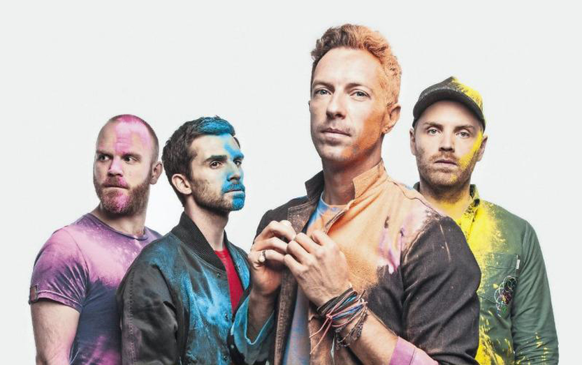

ColdPlay
1997년 영국 런던에서 결성된 얼터너티브 록밴드로, 오아시스의 부진과 라디오헤드의 음악적 고립으로 침체된 브리티시 록 음악 장르의
대안으로 떠오른 록밴드이다.
초기엔 트래비스와 라디오헤드가 보여준 음악과 비슷하였지만 갈수록 자신들만의 스타일을 확립시켜나가 평단과 대중의 호평을 동시에 받았던 몇안되는 밴드였다.
또한 2000년대 상업적으로 가장 성공한 밴드로 꼽히며, 2000년 이후 밴드들 중 압도적인 판매고와 가장 높은 스트리밍 수치를 기록중이다.

Viva la vida
(Ooohh Ooohh Ooohh Ooohh)
I used to rule the world
난 세상을 지배했었네
Seas would rise when I gave the word
바다도 내 명령에 물러서곤 했지
Now in the morning I sleep alone
이젠 아침에 홀로 잠들고
Sweep the streets I used to own
내 것이었던 거리를 청소하네
I used to roll the dice
내가 진군을 명령하면
Feel the fear in my enemy's eyes
적들은 두려움에 떨었건만
Listen as the crowd would sing
이제 백성들의 노래가 들리네
"Now the old king is dead! Long live the king!"
"폭군이 죽었으니 새 왕께 만세!"
One minute I held the key
열쇠를 쥐고 있던 나
Next the walls were closed on me
이젠 방에 갇힌 신세 되어
And I discovered that my castles stand
이제야 깨닫네 나의 성은
Upon pillars of salt and pillars of sand
소금과 모래로 된 기둥 위에 서 있음을
I hear Jerusalem bells a ringing
예루살렘의 종소리와
Roman Cavalry choirs are singing
로마 기병대의 합창이 들리네
Be my mirror, my sword and shield
내 거울과 검과 방패가 되어 주오
My missionaries in a foreign field
이방의 내 선교사들이여
For some reason I can't explain
말로 설명할 순 없지만
Once you go there was never
저 높은 곳에 앉으면
Never an honest word
진실함은 존재하지 않네
And that was when I ruled the world
내가 통치하던 그때처럼
It was the wicked and wild wind
그 악하고 거세던 바람
Blew down the doors to let me in
날 그 문으로 밀어넣었네
Shattered windows and the sound of drums
창문이 부숴지고 북소리가 들리고
People couldn't believe what I'd become
나도 날 감당할 수 없었지
Revolutionaries wait
혁명가들은 기다리네
For my head on a silver plate
은쟁반에 올려진 내 머리
Just a puppet on a lonely string
외줄에 매달린 꼭두각시여
Oh who would ever want to be king?
그 누가 왕이 되고 싶어 하려나?
I hear Jerusalem bells a ringing
예루살렘의 종소리와
Roman Cavalry choirs are singing
로마 기병대의 합창이 들리네
Be my mirror, my sword and shield
내 거울과 칼과 방패가 되어 주오
My missionaries in a foreign field
이방의 내 선교사들이여
For some reason I can't explain
말로 설명할 순 없지만
I know Saint Peter won't call my name
성 베드로가 내 이름을 부르진 않겠지
Never an honest word
진실함은 존재하지 않네
But that was when I ruled the world
내가 통치하던 그때처럼
Ooohh Ooohh Ooohh Ooohh
I hear Jerusalem bells a ringing
예루살렘의 종소리와
Roman Cavalry choirs are singing
로마 기병대의 합창이 들리네
Be my mirror, my sword and shield
내 거울과 칼과 방패가 되어 주오
My missionaries in a foreign field
이방의 내 선교사들이여
For some reason I can't explain
말로 설명할 순 없지만
I know Saint Peter won't call my name
성 베드로가 내 이름을 부르진 않겠지
Never an honest word
진실함은 존재하지 않네
But that was when I ruled the world
내가 통치하던 그때처럼